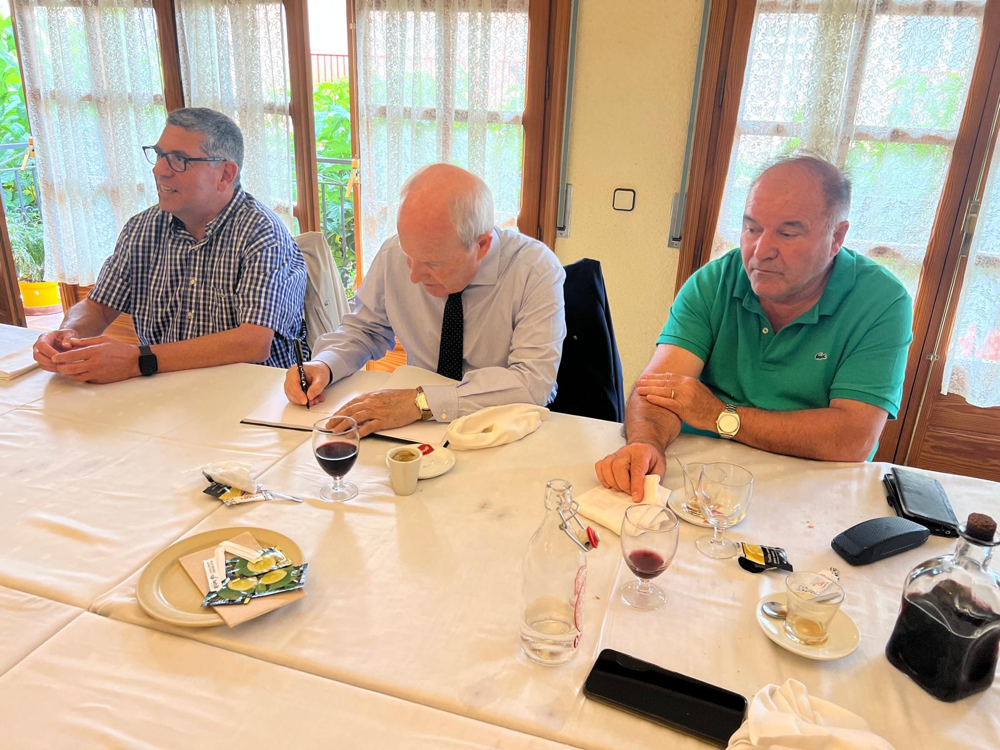
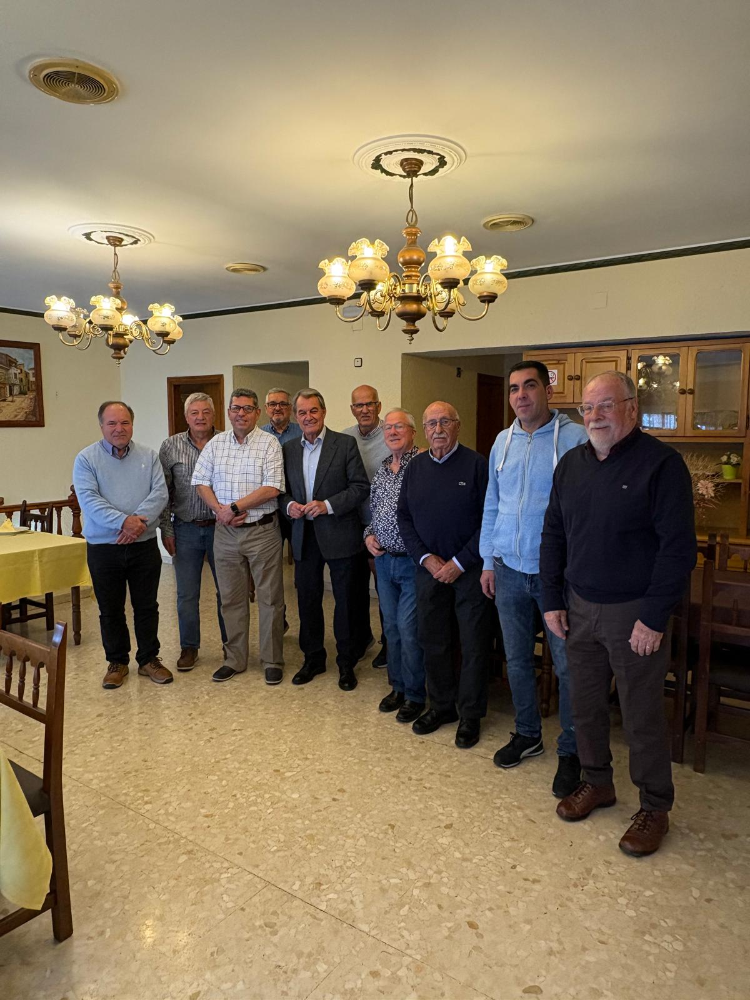
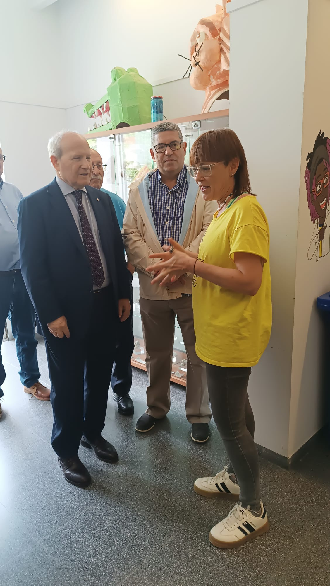
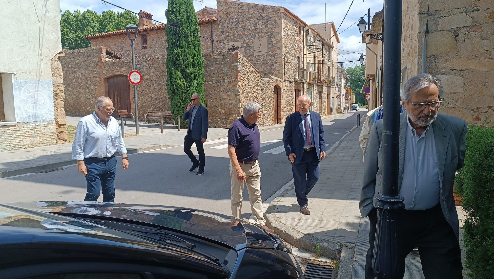
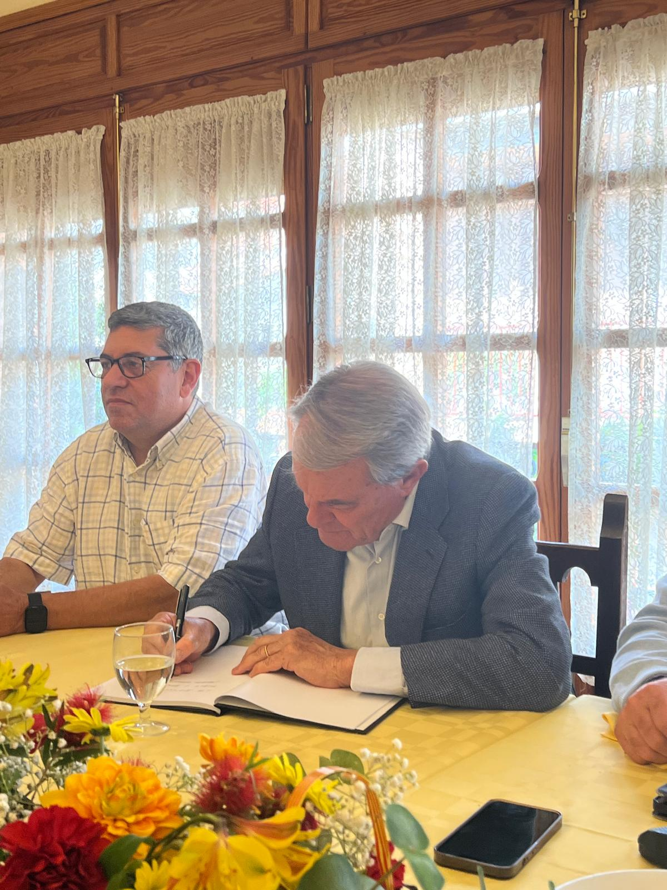
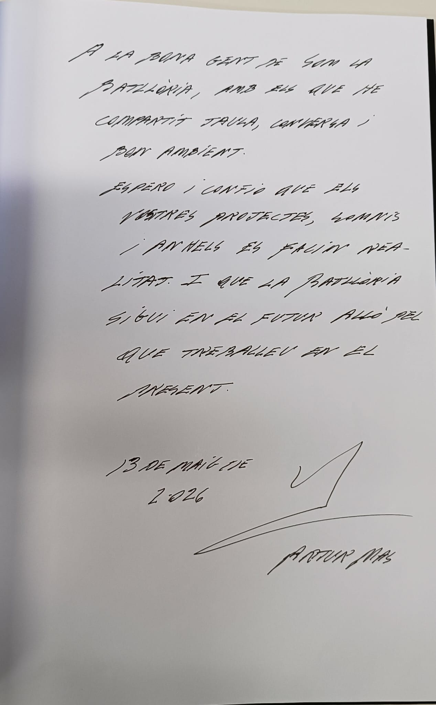
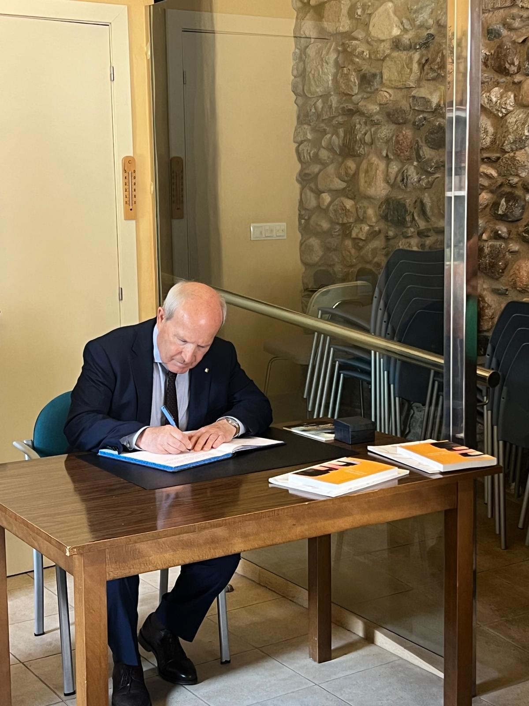

2026
Esmorzar amb José Montilla
Intercanvi d'experiències sobre administració, proximitat i serveis públics.
Trobades
Esmorzars, visites i reunions per explicar la realitat de La Batllòria i escoltar experiències de govern, territori i gestió pública.
Esmorzars de forquilla
Les trobades es documenten amb fotografies, notes i materials de treball per donar transparència al procés i preservar-ne la memòria.

Conversa tranquil·la sobre identitat local, consens, govern per a tothom i el paper de les entitats en la cohesió d'un poble.
Veure clips de l'entrevista
Intercanvi d'experiències sobre administració, proximitat i serveis públics.

Recorregut per espais que expliquen la vida quotidiana, l'educació i el teixit social.

Explicació sobre el terreny de la memòria, el patrimoni i els reptes de representació.
Galeria documental


